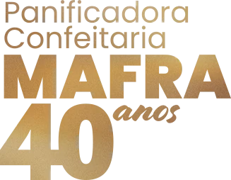
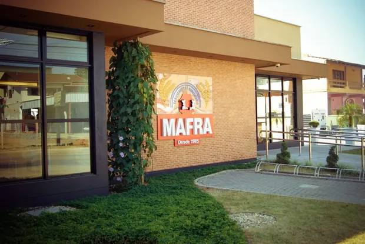

Nossa história
Mais que pães e doces. Parte da sua história.
Desde 1985, no Boehmerwald
Em 1985, a família Mafra deu início a uma jornada que, mais do que comercial, sempre foi afetiva. A primeira fornada foi mais que pão fresco no balcão: foi um convite ao encontro, às conversas, às memórias.
Ao longo de quatro décadas, a Panificadora Mafra evoluiu junto com a cidade, sem perder a essência artesanal e familiar.
Em 2025, a Mafra celebrou 40 anos, com orgulho de ser reconhecida como a confeitaria mais tradicional da zona sul de Joinville, e chegou ao bairro Costa e Silva.
O que move a casa
- Manter viva a tradição da confeitaria artesanal em Joinville
- Acolher clientes como amigos de longa data
- Trazer o cheirinho de infância à mesa das novas gerações

